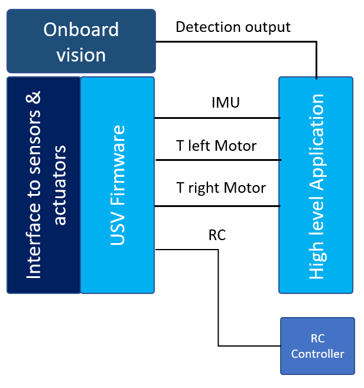

USV Hardware and Software Overview
This section explains the details of the USV hardware and the software.
USV Hardware Components
The figure below is explaining the overview of the main hardware components. The thrusters are attached to the electronic speed controller (ESC) which is connected to the power module and to the Navio2 board.
The navio2 board provides the interface to the sensors (such as IMU) and to the actuators. Raspberry Pi contains the high level software application.
Software Architecture
The main software system will reside in Raspberry Pi, it will consists of USV Firmware that will provide the interface for the high level application. High level application will contains the modules for visual servoing. The vision related information will be received from a seperate vision pipline that is running on TX2 board.
